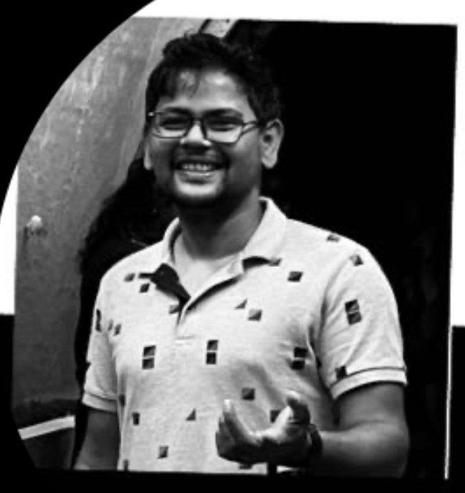

Odisha, India → Manchester, United Kingdom
The Observer
Software Engineer · Entrepreneur · Storyteller · Teacher · Visual and Performing Artist
Life is a random creation, revealed through every emotion, every observation, and the courage to look within.
About

Amaresh Nayak — Odisha, India · currently in Manchester, United Kingdom
I was born in Jajpur, Odisha, India, and grew up in a joint family — the sort of home where children’s voices and curiosity were often shaped more by the people and circumstances around them than by their parents. Privacy was mostly theoretical.
I studied at Jajpur Zilla School and later at N. C. College, both close enough to home. After that, I left home to study Electronics & Telecommunication Engineering at a private institution affiliated with Biju Patnaik University of Technology, graduating in 2009.
I entered the IT industry in 2011 as a project engineer. I began my career in software testing and eventually found my way into software development. In 2019, I cleared the Odisha Civil Services examination, but due to personal circumstances, I decided not to pursue it further.
In 2022, I moved to the United Kingdom. I live in Manchester now.
Over the years, teaching and mentoring have become an important part of my life. I have tutored students from different backgrounds — from school students following different board curricula and students from science backgrounds to those preparing for India’s civil services examinations. I also train people in software engineering, helping them build both technical skills and a way of thinking about problems.
Alongside that, I sculpt and make visual art, play the guitar and flute, and write and tell stories under the name Jollymynah.
I have never been particularly good at choosing just one thing.
I’m not a master of any of these pursuits. I used to think that was a problem. These days, I’m more interested in staying curious, observing closely, making things, learning from people, and following the questions wherever they lead.
The long way round
Six markers, from a joint family in Jajpur to a life in Manchester — each one still shaping how I see the next.
A joint family and an early habit of observing and questioning. Went to Jajpur Zilla School, Jajpur, and N.C. Junior College, Jajpur — both within reach of home.
An engineering degree from Biju Patnaik University of Technology — a trade in hand, before it was clear what I would do with it.
I started in software testing — learning a system by trying to break it, which turned out to suit me.
In India a government post is treated as the summit. I reached it — and personal circumstances led me not to take it further.
A move abroad, and a move from testing into development. New people, new arguments, and enough distance to see where I came from more honestly.
Training engineers, mentoring civil-services aspirants, and making things with my hands and my voice.
Practice
Four things I keep returning to, in whatever hours the day leaves.
Tutoring students across school boards and science streams, guiding civil-services aspirants, and training engineers in software.
Sculpting and painting, mostly for myself — a way of thinking with my hands rather than in words.
Under the name Jollymynah — essays and stories built out of what I have lived, watched, and slowly worked out.
Guitar and flute, played for the quiet of it rather than for an audience.
Why this site
Four reasons, really — and one of them is that I still expect to be argued out of something.
We have never been more connected, and I have never seen so many people this alone.
Social media has spread into almost every hour of the day. I watch people lose their footing in it — performing a life rather than living one, comparing themselves with strangers, and becoming quietly lonely in a crowd of thousands. I would rather have fewer conversations, and slower, more honest ones. That is much of what this site is for: to tell stories, to meet people properly, to share what little I know, and to keep learning from anyone willing to question or disagree with me.
I am Indian, and I say that without pretending that everything about India is something to be proud of. I don’t believe in defending things simply because they belong to us. We worship rivers and have made some of them among the most polluted in the world. We call our institutions sacred while corruption runs through them. We hold on to rigid practices long after we have forgotten why they began. We can be deeply generous and deeply contradictory at the same time.
I am no exception. I have been wrong. I have had opinions that changed when I listened, learned, or simply looked more closely. I would rather admit that than pretend to have all the answers.
And many of us leave India, do well abroad, and continue to say we love the country from a safe distance. I include myself in that. I am writing this from Manchester.
None of this is meant to run India down. Quite the opposite. You question what you belong to because you care about it. For me, being Indian does not mean refusing to see what is wrong. It means being honest enough to see it, humble enough to learn, and willing to listen when someone tells you that you are wrong.
That, too, is a form of belonging.
What I believe
“There is nothing inherently good or bad. Whatever you do, you face the consequences of your own action.”
It’s a thought close to the Bhagavad Gita’s teaching on karma — that we’re bound to the results of what we do, not to be spared or punished by anyone else’s judgment. Life is temporary. We take it in through our senses, one observation at a time, and the rest is the courage to look at what we find.
Connect
Most of what I make lives across a few places — pick whichever fits how you like to follow along.